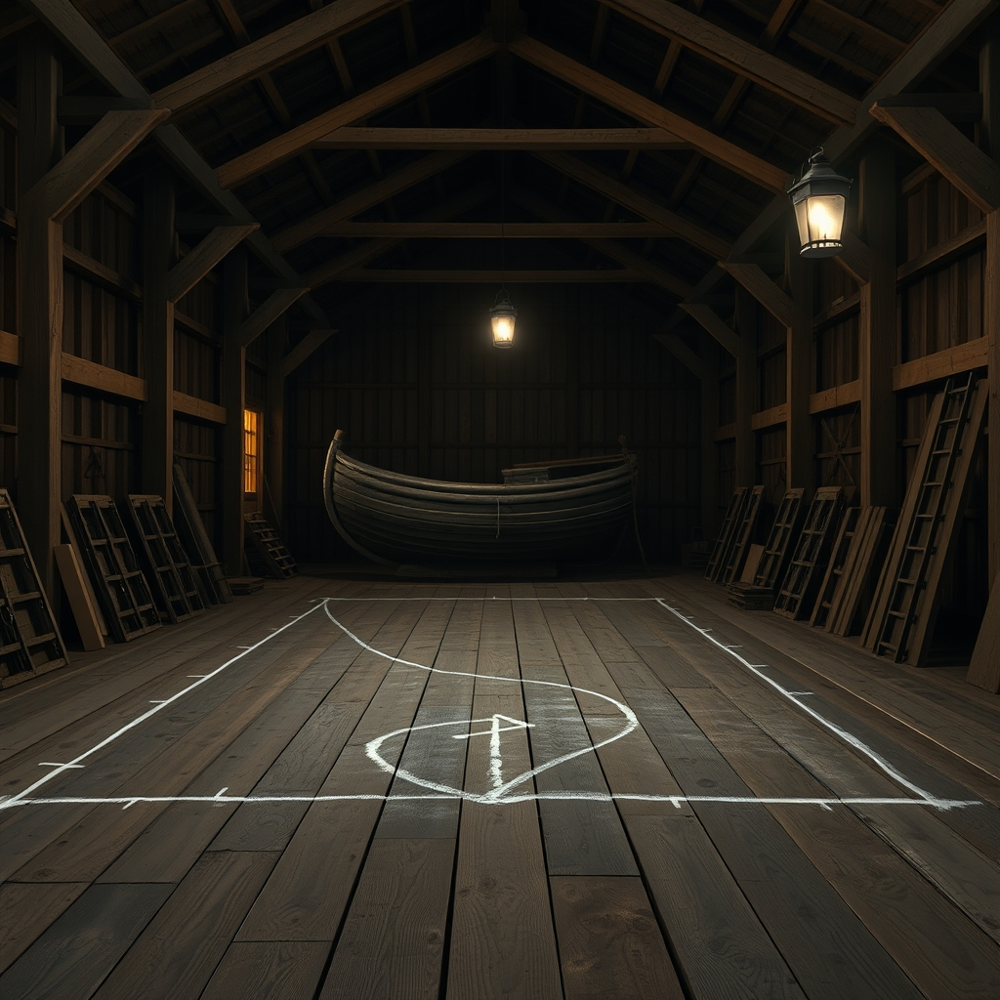
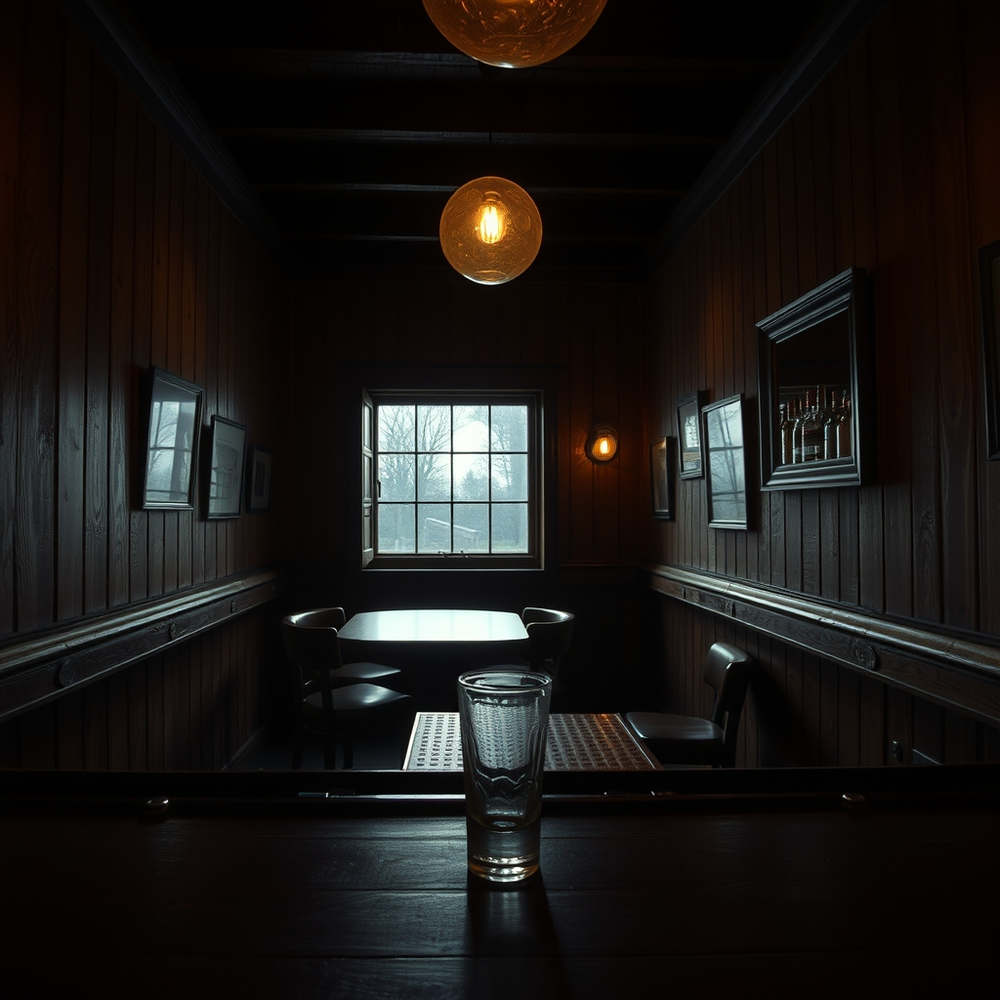

The Trades at The Tap · Episode 1 · The First Night
A MULTI-VOICE BROADCAST · 7 VOICES · 15 SCENES
You're listening to Radio Theater — the fleet's own re-telling of the Trades at The Tap.
This is Episode 1: The First Night, the night the trades
filed in from their sheds — the shipwright smelling of black pine chalk, the carpenter with
sawdust in his collar, the welder with the hood pushed back, the mason with lime on his hands,
the composite man with dust in his beard. They don't sit together. They sit near each
other, which for tradesmen is the same thing.
Lucineer, the foreman, sets down the first round. And what comes out of it is five short
versions of five long trades — and one argument, the good kind, about whether a man
lets the shape out or builds it. Every voice below is a separate voice —
a different TTS render, tuned to the trade that speaks it. Press play, and let the room hold you.


Seven characters, seven distinct voices. Each is a free-text voice prompt rendered through DeepInfra Qwen3-TTS-VoiceDesign.
The broadcast, scene by scene. Press play on any line to hear that voice speak it.
THE WELDER — "To the room, then. It heard us before we walked in. That's a better boss than I've had in nineteen years."
THE MASON — "I talked to it like a horse. It listened."
THE COMPOSITE MAN — "Both of us are saying the break's not the enemy."
THE SHIPWRIGHT — "Same joint, five names."
WESLEY, THE ROOM — "I keep them because I'm here. That's the whole trick of being a room."
Every rendered line, in broadcast order. A different voice for every trade.